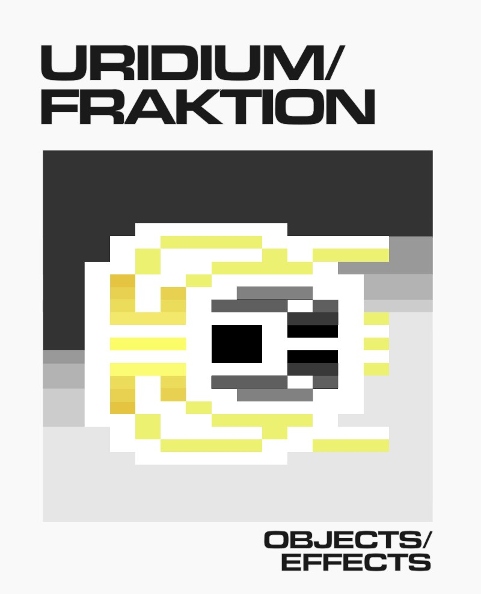
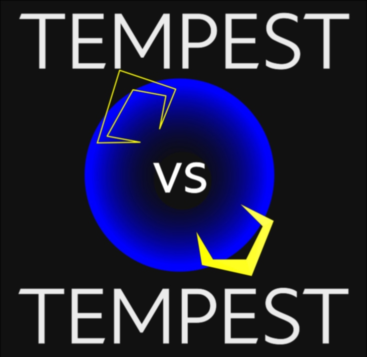
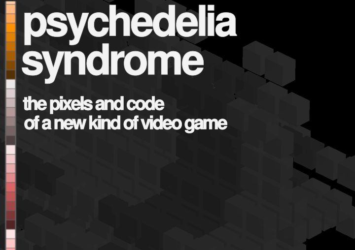
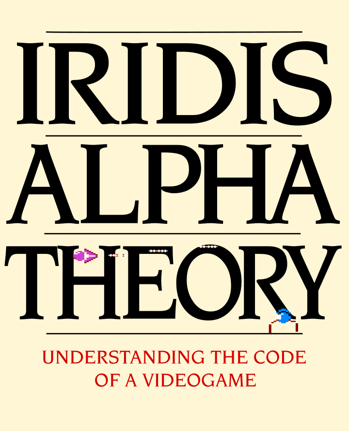

PDFs
-

URIDIUM/FRAKTION
URIDIUM/FRAKTION is a book-length attempt to explore and understand the code and craft of Andrew Braybrook's 'Uridium', which was published in 1986 for the Commodore 64 home computer.
-

Tempest vs Tempest
TEMPEST vs TEMPEST is a side-by-side analysis of the assembly code of Dave Theurer's 'Tempest' (1981) and Jeff Minter's 'Tempest 2000' (1994).
-

psychedelia syndrome
psychedelia syndrome is a book-length exploration of the assembly code behind Jeff Minter's 'Psychedelia' and an atlas of the pixels and effects it generated.
The book consists of many pretty pictures and a complete, academic-style commentary on the code for all editions of Psychedelia on the Commodore 64 plus a bonus section covering Colourspace on the Atari 400/800. -

Iridis Alpha Theory
Iridis Alpha is a classic of the 8-bit home computer era. An innovative, side-scrolling shoot-em-up for the Commodore 64 published by Llamasoft in 1985 that was notable then and now for its technical accomplishment.
IRIDIS ALPHA THEORY unpacks the assembly code of the game and pores over it in minute detail. There are also lots of pretty pictures.